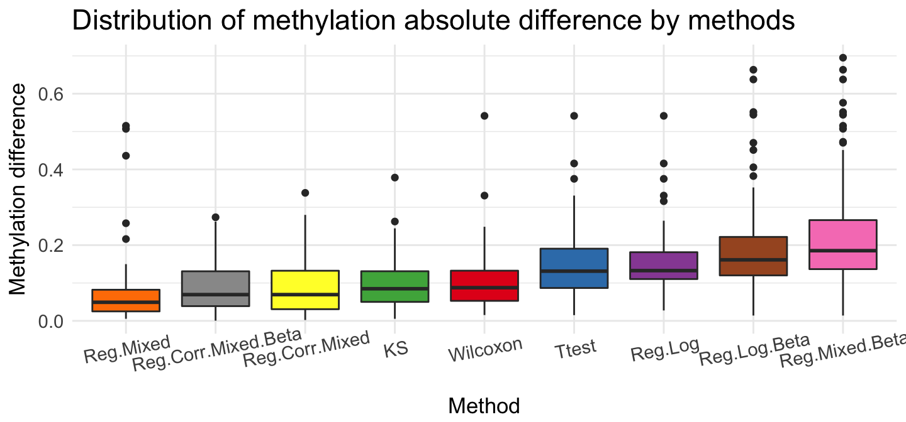
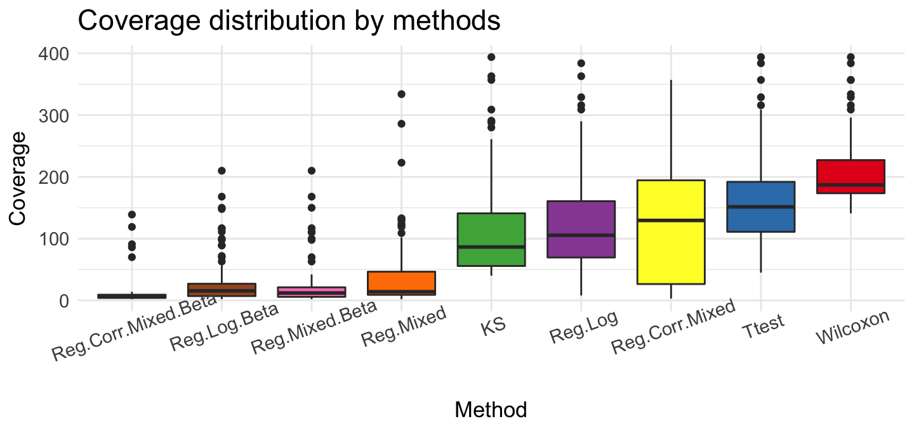

metR: a deeper study
Aleksandra Brodecka
2018-01-09
Introduction
The metR package contains tools for comprehensive analysis of data from methylation studies. With the metR one can define regions, get basic statistics about methylation in them, plot methylation rate or rank these regions from the most interesting to the least one.
devtools::install_github("geneticsMiNIng/metR")
library(metR)
library(kableExtra)
library(knitr)library(metR)## Loading required package: ggplot2## Loading required package: dplyr##
## Attaching package: 'dplyr'## The following objects are masked from 'package:stats':
##
## filter, lag## The following objects are masked from 'package:base':
##
## intersect, setdiff, setequal, union## Loading required package: lme4## Loading required package: Matrix## Loading required package: nlme##
## Attaching package: 'nlme'## The following object is masked from 'package:lme4':
##
## lmList## The following object is masked from 'package:dplyr':
##
## collapse## Loading required package: magrittr## Loading required package: tidyr##
## Attaching package: 'tidyr'## The following object is masked from 'package:magrittr':
##
## extract## The following object is masked from 'package:Matrix':
##
## expand## Loading required package: MASS##
## Attaching package: 'MASS'## The following object is masked from 'package:dplyr':
##
## selectlibrary(kableExtra)
library(knitr)The data
Data for this example are downloaded from the site: http://www.neuroepigenomics.org/methylomedb/download.html. We used 4 control samples: Control1 AC, Control2 AC, Control3 AC and Control4 AC and 4 disease samples: SCZ1 AC, SCZ2 AC, SCZ3 AC, SCZ4 AC.
In the metR package these samples are available in the schizophrenia data frame. Each row is a single methylation probe. Data from all control/disease samples are combined together.
To speed up calculations and shrink down the size of data we are using only probes from chromosome 1. The R code needed to download data from all samples can be found in the script https://github.com/geneticsMiNIng/metR/blob/master/examples/prep.MethylomeDB.R. The result of this script is a single data.frame schizophrenia that is included in metR package. The last column category indicates if data are from control samples (‘control’) or from disease samples (‘disease’).
data('schizophrenia')
kable_styling(kable(head(schizophrenia, 4), "html", bootstrap_options = "striped" , full_width = T), position = "left",
font_size = 11) %>% row_spec(1:4, color = "black")| chr | poz | no | meth | unmeth | meth.rate | category |
|---|---|---|---|---|---|---|
| chr1 | 73465 | 6 | 1 | 5 | 0.1666667 | control |
| chr1 | 73467 | 6 | 1 | 5 | 0.1666667 | control |
| chr1 | 74406 | 10 | 5 | 5 | 0.5000000 | control |
| chr1 | 74873 | 10 | 5 | 5 | 0.5000000 | control |
Process data
To obtain interesting regions in subsection Examples of differentially methylated regions we runned 4 functions from metR package:
preprocessing()- preprocessing schizophrenia datacreate_tiles_max_gap()- creating regionsget_stats()- getting basin statistics about created regionsfind_DMR()- ranking regions from the most interesting to the least one by different methods
Functions above are described in metR_step_by_step vignettes or in package documentation.
control <- schizophrenia %>% filter(category == 'control') %>%
dplyr::select(-category)
disease <- schizophrenia %>% filter(category == 'disease') %>%
dplyr::select(-category)
processed_schizophrenia <- preprocessing(control, disease)
tiles_schizophrenia <- create_tiles_max_gap(processed_schizophrenia, gaps.length = 100)
stats <- get_stats(tiles_schizophrenia)
data('find.DMR.results')
find.DMR.results$Reg.Log.Beta <- find.DMR.results$Reg.Log %>% filter(p.value < 0.001) %>% arrange(-abs(beta.coef))
find.DMR.results$Reg.Mixed.Beta <- find.DMR.results$Reg.Mixed %>% filter(p.value < 0.001) %>% arrange(-abs(beta.coef))
find.DMR.results$Reg.Corr.Mixed.Beta <- find.DMR.results$Reg.Corr.Mixed %>% filter(p.value < 0.001) %>% arrange(-abs(beta.coef))
top <- do.call(gdata::combine,lapply(find.DMR.results, metR::get_top, n = 100, stats = stats))Examples of differentially methylated regions
Below we are presenting more advance example of comparison of results from different tests. We are showing 8 regions that are results of running metR package on schizophrenia data.
1. Region with maximum coverage
This region has the largest coverage from interesting areas. We have 394 observations. This region hasn’t huge methylation diff in two samples but this difference is stable along the entire length.
draw_show_table(which.max(top$meth.cov),top,processed_schizophrenia)| chr | start | end | meth.cov | meth.max_x | meth.max_y | meth.mean_x | meth.mean_y |
|---|---|---|---|---|---|---|---|
| chr1 | 923898 | 927566 | 394 | 0.9 | 0.86 | 0.13 | 0.01 |
| meth.min_x | meth.min_y | meth.sd_x | meth.sd_y | meth.diff | quantile | source |
|---|---|---|---|---|---|---|
| 0.06 | 0 | 0.06 | 0.06 | 0.12 | 0.94 | Wilcoxon |
2. Region with maximum mean of methylation rate in control sample
This region has the largest mean of methylation rate in control sample from interesting areas. We have 104 observations and mean of methylation rate is equal 1. This means that all of 104 observations have methylation rate on the level 1!
draw_show_table(which.max(top$meth.mean_x),top,processed_schizophrenia)| chr | start | end | meth.cov | meth.max_x | meth.max_y | meth.mean_x | meth.mean_y |
|---|---|---|---|---|---|---|---|
| chr1 | 3086668 | 3088334 | 104 | 1 | 0.9 | 1 | 0.79 |
| meth.min_x | meth.min_y | meth.sd_x | meth.sd_y | meth.diff | quantile | source |
|---|---|---|---|---|---|---|
| 1 | 0.76 | 0 | 0.03 | 0.21 | 0.98 | Ttest |
3. Region with minimum mean of methylation rate in disease sample
This region has the smallest mean of methylation rate in disease sample from interesting areas. We have 210 observations and mean of methylation rate is equal 0. This means that all of 210 observations have methylation rate on the level 0!
This is reverse example to the previous one.
draw_show_table(which.min(top$meth.mean_y),top,processed_schizophrenia)| chr | start | end | meth.cov | meth.max_x | meth.max_y | meth.mean_x | meth.mean_y |
|---|---|---|---|---|---|---|---|
| chr1 | 20985025 | 20986706 | 210 | 0.06 | 0 | 0.06 | 0 |
| meth.min_x | meth.min_y | meth.sd_x | meth.sd_y | meth.diff | quantile | source |
|---|---|---|---|---|---|---|
| 0.05 | 0 | 0.01 | 0 | 0.06 | 0.85 | Wilcoxon |
4. Region with maximum standard deviation of methylation rate in control sample
We see very interesting regions below. In this example methylation rate start from 0 in both sample and increase to 1 in control sample and 0.75 in disease sample.
draw_show_table(which.max(top$meth.sd_x),top,processed_schizophrenia)| chr | start | end | meth.cov | meth.max_x | meth.max_y | meth.mean_x | meth.mean_y |
|---|---|---|---|---|---|---|---|
| chr1 | 109593468 | 109596927 | 223 | 1 | 0.83 | 0.42 | 0.36 |
| meth.min_x | meth.min_y | meth.sd_x | meth.sd_y | meth.diff | quantile | source |
|---|---|---|---|---|---|---|
| 0 | 0 | 0.47 | 0.39 | 0.07 | 0.87 | Reg.Log |
5. Region with maximum methylation difference in two probes
This area has only two observations but methylation difference between them is huge and equal 0.7.
draw_show_table(which.max(top$meth.diff),top,processed_schizophrenia)| chr | start | end | meth.cov | meth.max_x | meth.max_y | meth.mean_x | meth.mean_y |
|---|---|---|---|---|---|---|---|
| chr1 | 188542753 | 188542830 | 2 | 0.82 | 0.11 | 0.8 | 0.11 |
| meth.min_x | meth.min_y | meth.sd_x | meth.sd_y | meth.diff | quantile | source |
|---|---|---|---|---|---|---|
| 0.78 | 0.1 | 0.03 | 0.01 | 0.7 | 1 | Reg.Mixed.Beta |
6. Region with maximum rank function
This area has maximum rank function. Rank function is based on quantile regression which uses information about number of observations in region. In this example methylation difference between probes is the biggest with respect to number of observations. Methylation difference is close to methylation difference in previous example but has more observation (11 to 2).
draw_show_table(which.max(top$quantile),top,processed_schizophrenia)| chr | start | end | meth.cov | meth.max_x | meth.max_y | meth.mean_x | meth.mean_y |
|---|---|---|---|---|---|---|---|
| chr1 | 79270449 | 79270840 | 11 | 1 | 0.31 | 0.98 | 0.31 |
| meth.min_x | meth.min_y | meth.sd_x | meth.sd_y | meth.diff | quantile | source |
|---|---|---|---|---|---|---|
| 0.93 | 0.31 | 0.03 | 0 | 0.66 | 1 | Reg.Log.Beta |
7. Region with maximum methylation range in control sample
This region has the biggest methylation range in control sample from interesting areas. We see that methylation rate in control sample starts from 1 and decreases to 0. In disease sample methylation rate starts from level 0.9 and decreases to 0.15. Curious observations is occurence that at the beginning of region we see bigger methylation in control sample and at the end of region reverse case.
draw_show_table(which.max(top$meth.max_x - top$meth.min_x),top,processed_schizophrenia)| chr | start | end | meth.cov | meth.max_x | meth.max_y | meth.mean_x | meth.mean_y |
|---|---|---|---|---|---|---|---|
| chr1 | 62673335 | 62676253 | 233 | 1 | 0.93 | 0.13 | 0.25 |
| meth.min_x | meth.min_y | meth.sd_x | meth.sd_y | meth.diff | quantile | source |
|---|---|---|---|---|---|---|
| 0 | 0.14 | 0.29 | 0.22 | 0.12 | 0.93 | Wilcoxon |
8. Region with maximum methylation range in disease sample
This region has the biggest methylation range in disease sample from interesting areas. In the middle of region we can notice that methylation rate in disease sample is equal to 0 and in control is around 0.25. At the beginning and at the end of regions methylation increases in two probes.
draw_show_table(which.max(top$meth.max_y - top$meth.min_y),top,processed_schizophrenia)| chr | start | end | meth.cov | meth.max_x | meth.max_y | meth.mean_x | meth.mean_y |
|---|---|---|---|---|---|---|---|
| chr1 | 39342909 | 39345135 | 177 | 0.94 | 0.95 | 0.3 | 0.06 |
| meth.min_x | meth.min_y | meth.sd_x | meth.sd_y | meth.diff | quantile | source |
|---|---|---|---|---|---|---|
| 0.24 | 0 | 0.12 | 0.19 | 0.24 | 0.99 | Wilcoxon |
Comparing all methods
Methods above are described in metR_step_by_step or in documentation find_DMR().
ggplot(top, aes(x = source, y = quantile)) + geom_boxplot(aes(fill = source)) + ggtitle('Distribution of rank rate by methods') +
scale_fill_brewer(palette = "Set1") + theme_minimal() + theme(title = element_text(size = 14), axis.title = element_text(size = 13),
axis.text.y = element_text(size = 11), axis.text.x = element_text(size = 11, angle = 20) , legend.position = "None") +
labs(x="Method",y="Rank rate") +
scale_x_discrete(limits=c('Reg.Mixed','Reg.Corr.Mixed.Beta','Reg.Corr.Mixed', 'KS', "Wilcoxon", 'Reg.Log.Beta', 'Reg.Mixed.Beta', 'Reg.Log', 'Ttest'))ggplot(top, aes(x = source, y = meth.diff)) + geom_boxplot(aes(fill = source)) + ggtitle('Distribution of methylation absolute difference by methods') +
scale_fill_brewer(palette = "Set1") + theme_minimal() + theme(title = element_text(size = 14), axis.title = element_text(size = 13),
axis.text.y = element_text(size = 11), axis.text.x = element_text(size = 11, angle = 11) , legend.position = "None") +
labs(x="Method",y="Methylation difference") +
scale_x_discrete(limits=c('Reg.Mixed','Reg.Corr.Mixed.Beta','Reg.Corr.Mixed', 'KS', "Wilcoxon", 'Ttest', 'Reg.Log', 'Reg.Log.Beta', 'Reg.Mixed.Beta'))
ggplot(top, aes(x = source, y = meth.cov)) + geom_boxplot(aes(fill = source)) + ggtitle('Coverage distribution by methods') +
scale_fill_brewer(palette = "Set1") + theme_minimal() + theme(title = element_text(size = 14), axis.title = element_text(size = 13),
axis.text.y = element_text(size = 11), axis.text.x = element_text(size = 11, angle = 20) , legend.position = "None") +
labs(x="Method",y="Coverage") +
scale_x_discrete(limits=c('Reg.Corr.Mixed.Beta','Reg.Log.Beta','Reg.Mixed.Beta', 'Reg.Mixed', "KS", 'Reg.Log', 'Reg.Corr.Mixed', 'Ttest', 'Wilcoxon'))
We can show, that these method given very different results. The rank rate is very good if we use Ttest, Reg.Log, Reg.Mixed.Beta and Reg.Log.Beta methods. The biggest differences we see for methylation coverage. Wilcoxon test recommended regions that have the most observations ~ 200. Reg.Corr.Mixed.Beta and Reg.Log.Beta proposed smaller group - about 10 observations. If we check methylation difference, Reg.Log.Beta and Reg.Mixed.Beta present very large difference in recommended regions.
Session info
devtools::session_info()## Session info -------------------------------------------------------------## setting value
## version R version 3.4.3 (2017-11-30)
## system x86_64, darwin15.6.0
## ui X11
## language (EN)
## collate en_US.UTF-8
## tz Europe/Warsaw
## date 2018-01-09## Packages -----------------------------------------------------------------## package * version date source
## assertthat 0.2.0 2017-04-11 CRAN (R 3.4.0)
## backports 1.1.1 2017-09-25 CRAN (R 3.4.2)
## base * 3.4.3 2017-12-07 local
## bindr 0.1 2016-11-13 CRAN (R 3.4.0)
## bindrcpp * 0.2 2017-06-17 CRAN (R 3.4.0)
## colorspace 1.3-2 2016-12-14 CRAN (R 3.4.0)
## compiler 3.4.3 2017-12-07 local
## datasets * 3.4.3 2017-12-07 local
## devtools 1.13.3 2017-08-02 CRAN (R 3.4.1)
## digest 0.6.13 2017-12-14 cran (@0.6.13)
## dplyr * 0.7.4 2017-09-28 CRAN (R 3.4.2)
## evaluate 0.10.1 2017-06-24 CRAN (R 3.4.1)
## gdata 2.17.0 2015-07-04 CRAN (R 3.2.0)
## ggplot2 * 2.2.1 2016-12-30 CRAN (R 3.4.0)
## glue 1.1.1 2017-06-21 CRAN (R 3.4.1)
## graphics * 3.4.3 2017-12-07 local
## grDevices * 3.4.3 2017-12-07 local
## grid 3.4.3 2017-12-07 local
## gtable 0.2.0 2016-02-26 CRAN (R 3.2.3)
## gtools 3.5.0 2015-05-29 CRAN (R 3.2.0)
## highr 0.6 2016-05-09 CRAN (R 3.4.0)
## hms 0.4.0 2017-11-23 cran (@0.4.0)
## htmltools 0.3.6 2017-04-28 CRAN (R 3.4.0)
## httr 1.3.1 2017-08-20 CRAN (R 3.4.1)
## kableExtra * 0.5.2 2017-09-15 cran (@0.5.2)
## knitr * 1.18 2017-12-27 cran (@1.18)
## labeling 0.3 2014-08-23 CRAN (R 3.2.2)
## lattice 0.20-35 2017-03-25 CRAN (R 3.4.3)
## lazyeval 0.2.0 2016-06-12 CRAN (R 3.4.0)
## lme4 * 1.1-15 2017-12-21 cran (@1.1-15)
## magrittr * 1.5 2014-11-22 CRAN (R 3.2.2)
## MASS * 7.3-47 2017-02-26 CRAN (R 3.4.3)
## Matrix * 1.2-12 2017-11-15 CRAN (R 3.4.2)
## memoise 1.1.0 2017-04-21 CRAN (R 3.4.0)
## methods * 3.4.3 2017-12-07 local
## metR * 0.1.0 2018-01-09 local (geneticsMiNIng/metR@NA)
## minqa 1.2.4 2014-10-09 CRAN (R 3.1.1)
## munsell 0.4.3 2016-02-13 CRAN (R 3.2.3)
## nlme * 3.1-131 2017-02-06 CRAN (R 3.4.3)
## nloptr 1.0.4 2014-08-04 CRAN (R 3.2.2)
## pkgconfig 2.0.1 2017-03-21 CRAN (R 3.4.0)
## plyr 1.8.4 2016-06-08 CRAN (R 3.4.0)
## purrr 0.2.4 2017-10-18 cran (@0.2.4)
## R6 2.2.2 2017-06-17 CRAN (R 3.4.0)
## RColorBrewer 1.1-2 2014-12-07 CRAN (R 3.2.2)
## Rcpp 0.12.14 2017-11-23 cran (@0.12.14)
## readr 1.1.1 2017-05-16 CRAN (R 3.4.0)
## rlang 0.1.6 2017-12-21 CRAN (R 3.4.3)
## rmarkdown 1.8 2017-11-17 cran (@1.8)
## rprojroot 1.2 2017-01-16 CRAN (R 3.4.0)
## rvest 0.3.2 2016-06-17 CRAN (R 3.4.0)
## scales 0.5.0 2017-08-24 CRAN (R 3.4.1)
## splines 3.4.3 2017-12-07 local
## stats * 3.4.3 2017-12-07 local
## stringi 1.1.6 2017-11-17 cran (@1.1.6)
## stringr 1.2.0 2017-02-18 CRAN (R 3.4.0)
## tibble 1.3.4 2017-08-22 CRAN (R 3.4.1)
## tidyr * 0.7.2 2017-10-16 cran (@0.7.2)
## tidyselect 0.2.2 2017-10-10 cran (@0.2.2)
## tools 3.4.3 2017-12-07 local
## utils * 3.4.3 2017-12-07 local
## withr 2.1.0 2017-11-01 cran (@2.1.0)
## xml2 1.1.1 2017-01-24 CRAN (R 3.4.0)
## yaml 2.1.16 2017-12-12 cran (@2.1.16)